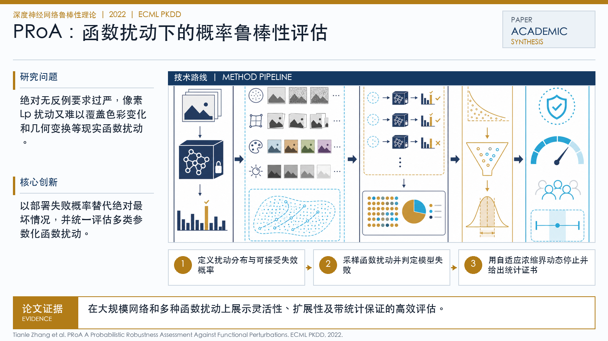

Problem
解决的问题
绝对无反例要求过严，像素 Lp 扰动又难以覆盖色彩变化和几何变换等现实函数扰动。
Robustness Theory of DNNs · 2022 · ECML PKDD
PRoA A Probabilistic Robustness Assessment Against Functional Perturbations
Problem
绝对无反例要求过严，像素 Lp 扰动又难以覆盖色彩变化和几何变换等现实函数扰动。
Value
在大规模网络和多种函数扰动上展示灵活性、扩展性及带统计保证的高效评估。
Paper-grounded Academic Summary
该代表页依据原文摘要、贡献段与方法图注生成。方法视觉由 ImageGen 按论文证据逐篇绘制，中文研究问题、技术路线、创新点与实验结论采用确定性排版，以保证内容与字符准确。
打开原文 PDF
Technical Route
Innovation